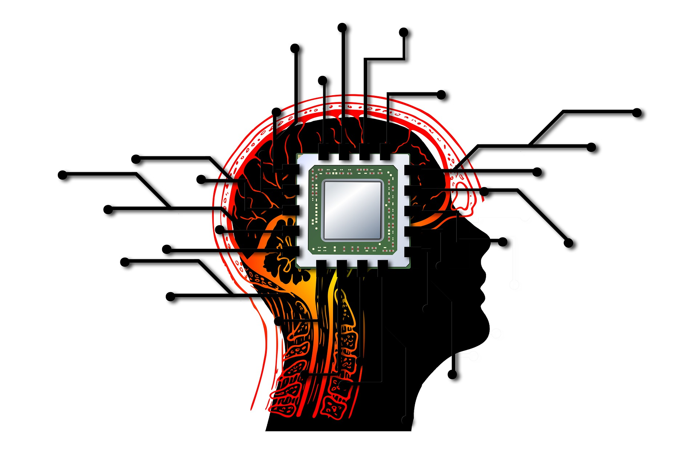

Inteligência Artificial
Aplicada na Sociedade
Ultimamente vemos IA em todos os aplicativos de celulares ou até mesmo sua casa, onde você pode ter uma lâmpada inteligente.
Estamos vivendo em constante evolução e hoje dados valem mais do que petróleo e nisso temos empresas multimilionárias como
Facebook, Google, Microsoft, entre várias outras.
A IA na sociedade já está gerando grandes benefícios, como o reconhecimento de possíveis desastres naturais e até mesmo o entretenimento
gerado pelas mídias de streaming. A inteligência artificial permite alcançarmos algo que para o ser humano é quase impossível, viver na terra
sem causar mal a ela, isso é possível para IA pela sua capacidade de aprender facilmente, até para os gênios da nossa sociedade a um limite,
mas já a IA não, por isso podemos resolver problemas imensos como fome, desigualdade e poluição.

Segurança e IA
Ultimamente a falta de segurança é um problema que temos que conviver,
mas será que é obrigatório?
Não, um método de resolvermos os nossos problemas é a implantação da IA na
segurança, utilizando o método de Machine Learning (O aprendizado de máquina)
que basicamente oferecemos as maquinas a oportunidade de aprender com casos já solucionados.
Veja o exemplo e visão do Bob Rogers cientista de dados chefe da Intel.
“Os números estão crescendo exponencialmente e isso é guiado por essas tecnologias avançadas.
Os provedores de serviços eletrônicos estão utilizando mais IA para identificar comportamento suspeito,
como um registro de conversa entre um adulto e um menor com conteúdo sexual explícito. Existe um pouco de
IA no reconhecimento de pornografia infantil, embora essa aplicação ainda seja muito rudimentar. ”
A Intel vem adotando essa causa pois no ano passado, o FBI relatou 465.676 registros de crianças
desaparecidas nos Estados Unidos. Assim ajudando instituições sem fins lucrativos nessa grande causa,
em prol da sociedade e segurança da mesma.
Pois eles acreditam que a IA equipada com Intel ajuda a encontrar crianças desaparecidas.
Além de afirmarem que: “A inteligência artificial pode ajudar a reduzir o tempo necessário para obter uma
indicação sobre uma criança desaparecida ou explorada para as autoridades certas. ”
A Intel junto de instituições sem fins lucrativos acredita que as principais lições são:
• Os provedores de serviços de Internet podem identificar exemplos de atividade suspeita on-line que indique
exploração infantil.
• Milhões dessas dicas cibernéticas são fornecidas todos os anos a uma organização dedicada a resgatar crianças
desaparecidas e exploradas.
• Análise avançada e inteligência artificial podem ajudar os analistas a processarem essas dicas e enviá-las aos
órgãos de segurança pública mais rapidamente.
Com isso podemos concluir que os avanços tecnológicos sempre serão em prol da humanidade, a Intel junto do uso de
tecnologias como Inteligência Artificial são as grandes provas disso.
Serviços após tecnologia
Com os avanços na nossa tecnologia é eminente que as máquinas vão substituir os humanos em alguns trabalhos.
Mas isso realmente é ruim?
Há anos surgiu essa dúvida de como iremos viver após as maquinas assumirem a maioria dos empregos, mas deixaram de
responder a dúvida em si porque não devemos nos preocupar com exatamente nada. Pois a IA ou qualquer outro tipo de
tecnologia está aqui no presente e estará no futuro para nos ajudar.
Ninguém mais gosta de trabalhar fritando batata ou pegando sol o dia todo como um gari, por isso a IA entrará em ação,
com isso podemos programar robôs que possam cumprir essas tarefas e com isso os serviços que deixamos de prestar se
tornara outro, como programar maquinas (que é extremamente recente), e com a Quarta Revolução Industrial ira surgir
inúmeras vagas de empregos que não exigiram nem ao menos sair de casa. A mudança no trabalho é inevitável é só olharmos
para todas as revoluções indústrias que já ocorreram, inúmeros trabalhos deixaram de existir, mas novos trabalhos surgiram,
e é por isso que a sociedade evolui.